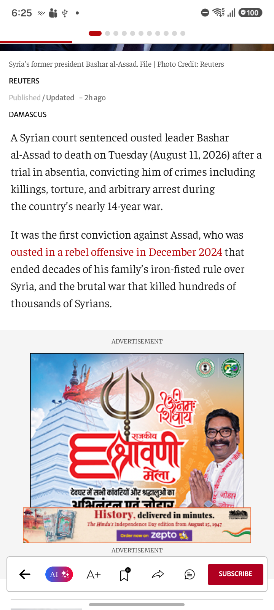
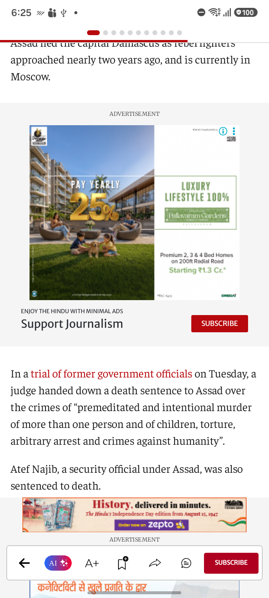
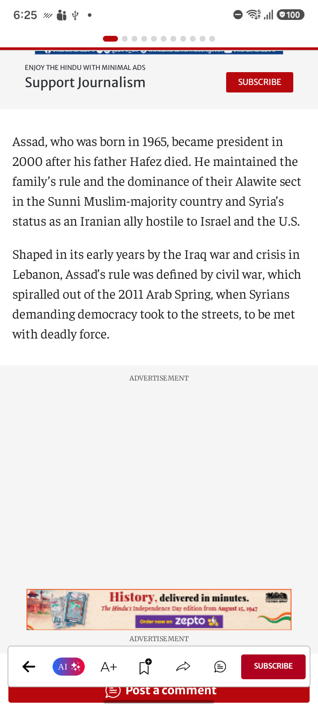
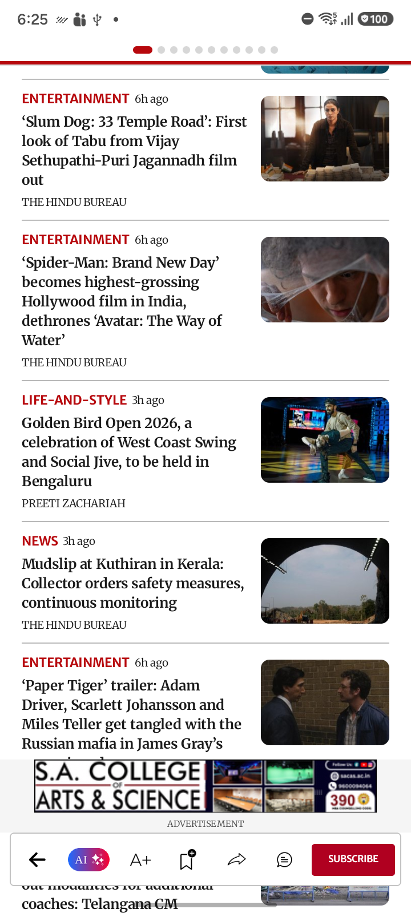
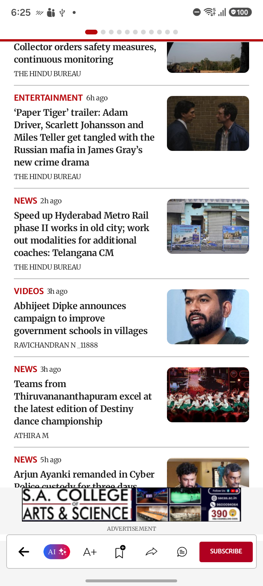
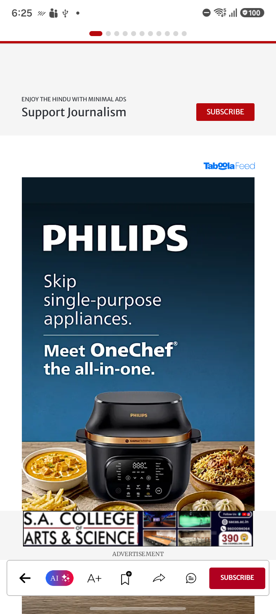
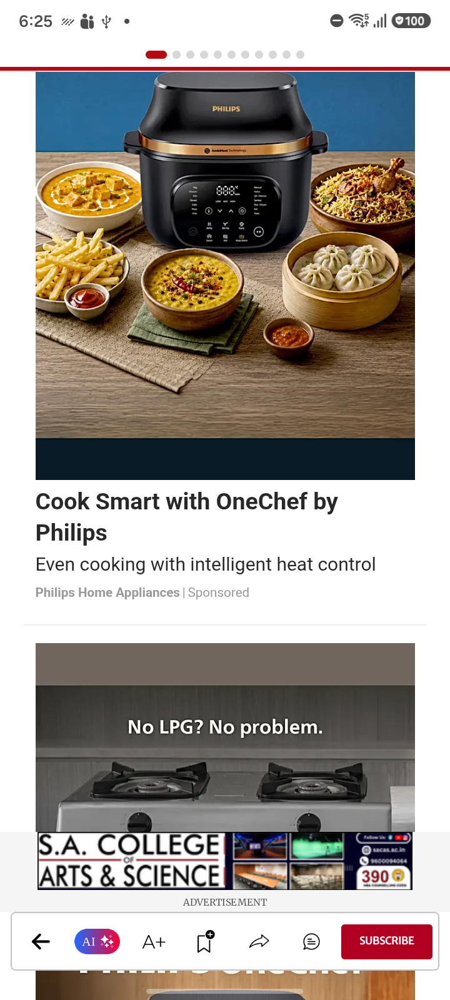
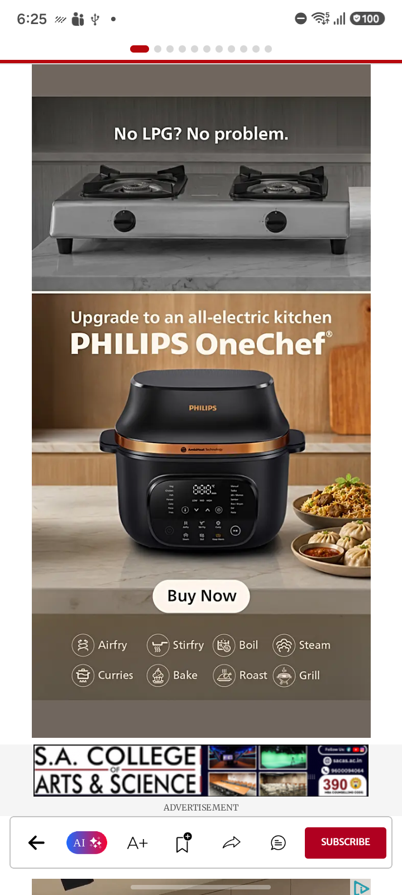
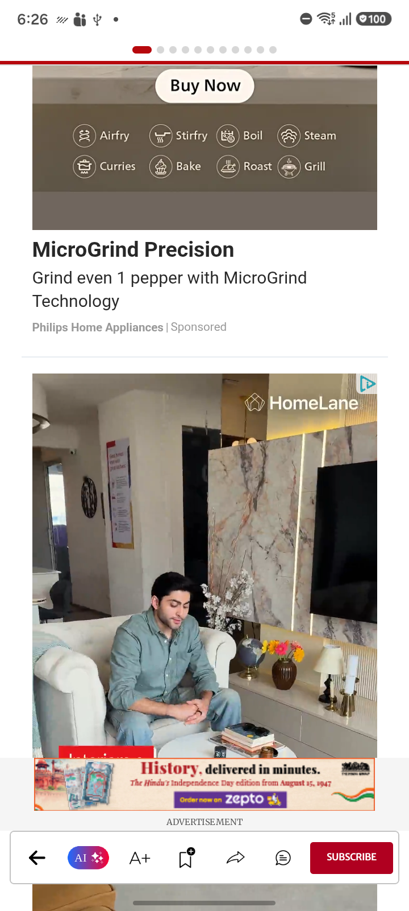

SC_81 — SC 81 World page article Anonymous Account

Image: SC_81_World_Page_AI_Summary.png
Confidence: High Severity: LOW
Reason: All expected UI elements are present and rendered correctly. No visible UI defects or layout issues.
Image: SC_81_World_Page_Anonymous_Account_Article_01.png
Confidence: High Severity: LOW
Reason: All expected UI components are present and correctly rendered. No visual UI defects found.

Image: SC_81_World_Page_Anonymous_Account_Article_02.png
Confidence: High Severity: LOW
Reason: All expected UI components are present and no visual defects are observed.
Image: SC_81_World_Page_Anonymous_Account_Article_03.png
Confidence: High Severity: HIGH
Reason: A large blank white region is present above the advertisement banner, with two 'ADVERTISEMENT' labels indicating a missing or failed ad render.
Issues:
- Large blank area above advertisement
- Multiple 'ADVERTISEMENT' labels without corresponding ads
- Evidence of missing ad content
Jira Title: Blank area and missing advertisement in content feed
Jira Description: A large blank white space is visible above the advertisement banner with two sequential 'ADVERTISEMENT' labels. This indicates a rendering defect where an ad or content block failed to load.

Image: SC_81_World_Page_Anonymous_Account_Article_04.png
Confidence: High Severity: LOW
Reason: No UI defects are visible. All elements are present and correctly rendered. Advertisements appear in designated containers and no layout issues are observed.
Image: SC_81_World_Page_Anonymous_Account_Article_05.png
Confidence: High Severity: LOW
Reason: All expected UI components are present and correctly rendered. There are no visible layout, text, rendering, or advertisement defects.

Image: SC_81_World_Page_Anonymous_Account_Article_06.png
Confidence: High Severity: HIGH
Reason: Visible blank advertisement container between article content and banner ad indicates incomplete ad rendering.
Issues:
- Blank advertisement container
- Empty advertisement placeholder
Jira Title: Blank advertisement container visible in article page
Jira Description: An empty advertisement container with only the 'ADVERTISEMENT' label is visible between the article content and the banner ad. This indicates incomplete ad rendering or missing advertisement content.
Image: SC_81_World_Page_Anonymous_Account_Article_07.png
Confidence: High Severity: HIGH
Reason: Large unexpected blank white region interrupts the application content between 'Post a comment' and the advertisement section indicating incomplete rendering or missing UI.
Issues:
- Unexpected large blank area within app content
- Possible missing cards or incomplete rendering
Jira Title: Unexpected blank area interrupts application content
Jira Description: There is a large blank white space between the 'Post a comment' button and the advertisement section, indicating possible incomplete rendering or missing content within the application UI.
Image: SC_81_World_Page_Anonymous_Account_Article_08.png
Confidence: High Severity: LOW
Reason: All expected UI elements are present and fully rendered. No layout, rendering, or text defects are visible.

Image: SC_81_World_Page_Anonymous_Account_Article_09.png
Confidence: High Severity: LOW
Reason: All UI components are present and properly rendered. No layout, rendering, or text issues detected.

Image: SC_81_World_Page_Anonymous_Account_Article_10.png
Confidence: High Severity: HIGH
Reason: Advertisement banner overlays and blocks visible content of a news article.
Issues:
- Advertisement banner overlaying application content
- News article text and image partially blocked by advertisement
Jira Title: Advertisement banner overlays news content
Jira Description: The advertisement banner is overlaying and blocking part of the news article content, resulting in partial visibility and broken layout. Advertisement containers should never cover main content.
Image: SC_81_World_Page_Anonymous_Account_Article_11.png
Confidence: High Severity: HIGH
Reason: There is a large blank area under the 'ADVERTISEMENT' label, indicating an empty advertisement placeholder.
Issues:
- Blank advertisement container
- Empty advertisement placeholder
Jira Title: Blank advertisement container visible in article feed
Jira Description: A large blank area labeled 'ADVERTISEMENT' is present without any ad creative, indicating an empty advertisement placeholder should not be shown to users.

Image: SC_81_World_Page_Anonymous_Account_Article_12.png
Confidence: High Severity: LOW
Reason: All UI components are present and rendered correctly. No visible layout, rendering, or text issues.

Image: SC_81_World_Page_Anonymous_Account_Article_13.png
Confidence: High Severity: LOW
Reason: All expected UI components are present and rendered correctly without any visible defects.

Image: SC_81_World_Page_Anonymous_Account_Article_14.png
Confidence: High Severity: LOW
Reason: All UI components are present and correctly rendered with no visible layout or rendering defects.

Image: SC_81_World_Page_Anonymous_Account_Article_15.png
Confidence: High Severity: LOW
Reason: All UI components are present. No visible layout or rendering issues.